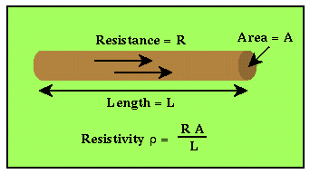

It's Resistivity, NOT Resistance
The problem with using resistance as a measurement is that it depends not only on the material from which the wire is made, but also the geometry of the wire. If we were to increase the length of wire, for example, the measured resistance would increase. Also, if we were to decrease the diameter of the wire, the measured resistance would increase. We want to define a property that describes a material's ability to transmit electrical current that is independent of the geometrical factors.
The geometrically-independent quantity that is used is called resistivity and is usually indicated by the Greek symbol ρ*.

In the case of a wire, resistivity is defined as the resistance in the wire, times the cross-sectional area of the wire, divided by the length of the wire. The units associated with resistivity are thus, ohm - m (ohm - meters).
Resistivity is a fundamental parameter of the material making up the wire that describes how easily the wire can transmit an electrical current. High values of resistivity imply that the material making up the wire is very resistant to the flow of electricity. Low values of resistivity imply that the material making up the wire transmits electricial current very easily.
*Unfortunately, the symbol is used throughout the geophysical literature to represent both density and resistivity. Although one would suspect that this could lead to some confusion, it rarely does because the context in which ρ is used will usually define whether it is representing density or resistivity unambiguously. In these notes, we will follow standard geophysical practice and use ρ to represent both physical properties.
Resistivity
- Current Flow and Ohm's Law pg 4
- The Fund. Electrical Property is Resistivity, NOT Resistance pg 5
- Resistivities for Common Earth Materialspg 6
- Current Density and Electric Fieldpg 7
- A First Estimate of Resistivitypg 8
- Current Flow From Two Closely Spaced Electrodespg 9
- A Practical Way of Measuring Resistivity pg 10
- Sources of Noise pg 11
- Depth of Current Penetration V.S. Current ElectrodeSpacing pg 12
- Current Flow in Layered Media pg 13
- Variation in Apparent Resistivity: Layered Versus Homogeneous Media pg 14
- Current Flow in Layered Media Versus Electrode Spacing pg 15
- A Second Example of Current Flow in Layered Mediapg 16